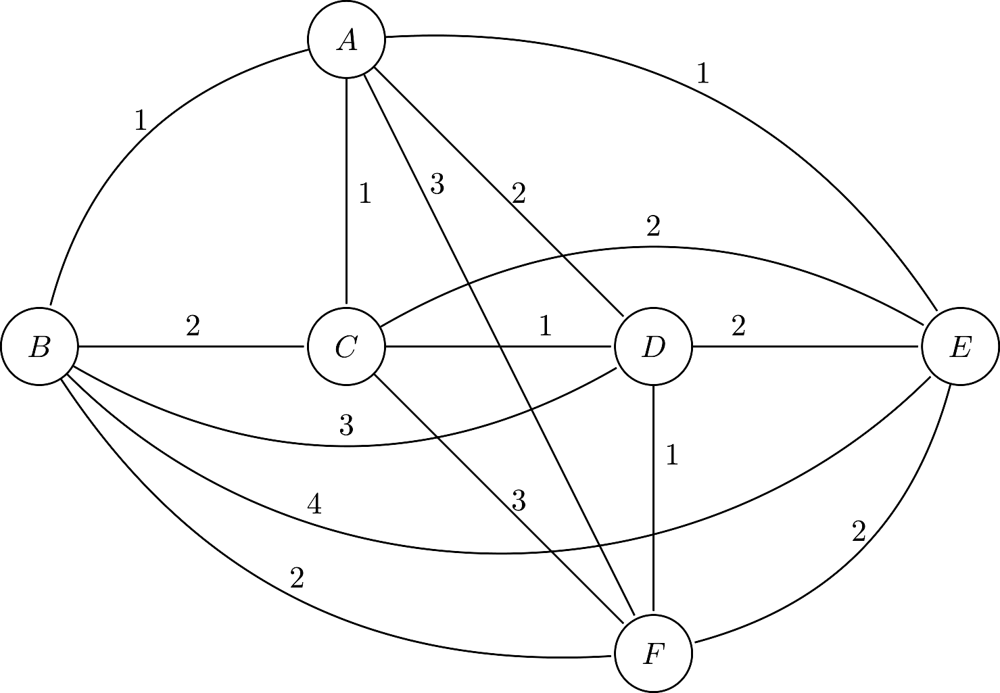

Orientado pelo Prof. Mario Benevides
É uma variante de Public Announcement Logic (PAL), onde o conhecimento é representado sobre populações e grupos, ao invés de sobre agentes discretos como é comumente feito na literatura.
A PPAL foi apresentada na minha dissertação de mestrado em 14/07/2016.
As novas direções que prentendemos explorar com o trabalho são diversas aplicações em redes sociais, e melhorias na especificação de modelos para verificação.
Nas próximas seções veremos as motivações, desafios, e o que foi desenvolvido até o momento para essas aplicações.
Nos dias 23 e 24 de Setembro de 2017 o workshop "Dynamic Logic: new trends and applications" (DaLí) ocorreu na Universidade de Brasília (UnB).
Na conferência, foi apresentado, dentre outros, o trabalho de S. Smets e F. R. Velázquez-Quesada: "The Creation and Change of Social Networks: a logical study based on group size".
O artigo citado anteriormente apresenta abordagens de lógica modal para a modelagem e estudo de redes sociais.
As redes socias são criadas considerando-se as distâncias entre os agentes, que são definidas como as diferenças entre suas propriedades (ou preferências).
O número de Dunbar $\lambda$ [Dunbar, 1992] é definido como o tamanho máximo da rede social que um agente pode possuir.
A motivação é a própria limitação cognitiva de uma pessoa em conseguir manter relacionamentos sustentáveis com tamanho número de indivíduos.
Inspirando-se nas ideias anteriores, a métrica de distância usada na definição das redes socais para PPAL são os interesses dos grupos.
Definimos os interesses a partir da matriz de interesses: \[ I_{M, w}(G) = \{p \mid \mathcal{I}_{M, w}[G, p] = True\} \] Exemplo:
| Grupo | a | l | m | p |
|---|---|---|---|---|
| A | True | True | True | False |
| B | False | True | False | True |
| C | True | False | True | False |
| D | False | False | True | False |
A distância social de um grupo $A$ para um grupo $B$ é: \[ SD_{M, w}(A, B) = \lvert I(A) \cup I(B) \rvert - \lvert I(A) \cap I(B) \rvert \]
Evaluação do operador de camada social $\odot_{G'}^{A,n} \varphi$: \[ E_{M_G, s}(\odot_{G'}^{A,n} \varphi) = E_{M_{G'}, s}(\varphi) \] onde $G' = \{g \in \mathcal{G}_A \mid SD_{M, w}{(A, g)} \leq n\}$ e $\mathcal{G}_A$ é o conjunto de todos os grupos.
É a camada mais externa dentre as camadas sociais de um grupo.
\[ M, w \uparrow A = max_{X \in \mathcal{G}_A} \{SD_{M, w}(A, X)\} \]
Para qualquer distância $m \geq M, w \uparrow A$, consideramos que: \[ \odot_{G'}^{A, m}(\varphi) = \odot_{G'}^{A, (M, w \uparrow A)}(\varphi) \]
Podemos usar a notação $\odot_{G'}^A(\varphi)$ como abreviação de $\odot_{G'}^{A, (M, w \uparrow A)}(\varphi)$.
Nesse caso de uso, o objetivo é analisar como notícias falsas, ou "fake news", se espalham por uma rede social. O tema ganhou fama após a campanha presidencial de 2016 nos Estados Unidos.
O desafio desse caso de uso é modelar o conflito entre notícias reais e falsas, e o que leva uma população a acreditar em algo.
Nesse caso de uso, o objetivo é analisar como as preferências das conexões de um agente em uma rede social influenciam nas próprias preferências do agente. Isso é denominado "pressão de colegas", ou "peer pressure".
O desafio desse caso de uso é como modelar a passagem de tempo e evolução do estado da rede.
Um caminho que deve ser explorado é a comparação da abordagem aqui apresentada e a abordagem tradicional para redes sociais.
Redes sociais normalmente são divididas em três níveis distintos de abstração: micro, meso e macro.
No nível micro, o foco é em indivíduos, e suas interações diretas com outros. Não é nosso objetivo de estudo, já que na PPAL indivíduos nunca são endereçados diretamente.
No nível meso, populações e grupos e suas relações são estudadas.
No nível macro, populações e grupos também são estudados, porém estamos mais interessados em desfechos globais e fatos sobre toda a rede.
Centralidade é uma métrica importante da relevância de um nó para uma rede. Em análise de grafos convencional, a centralidade de proximidade é a distância média dos caminhos mais curtos entre o nó e todos os outros nós do grafo.
Normalmente a métrica de distancia usada é a geodésica (número de arestas mínimo conectando os vértices). Aqui usaremos a métrica de distância social definida anteriormente.
A centralidade de proximidade normalizada de um grupo $G$, é definida através da soma de distâncias de $G$ até todos os outros grupos, variando de $0$ a $1$: \[ C_{M, w}(G) = \frac{\overline{\mathcal{G}_G} - 1}{\overline{\mathcal{G}_G} - 1 + \sum_{X \in \mathcal{G}_G} SD_{M, w}(G, X)} \]
Nesta imagem vemos as distâncias sociais entre grupos (e não os relacionamentos entre estados do modelo).  \[ C_{M, w}(A) = \frac{5}{5+1+1+2+1+3} = \frac{5}{13} \approx 0.385 \]